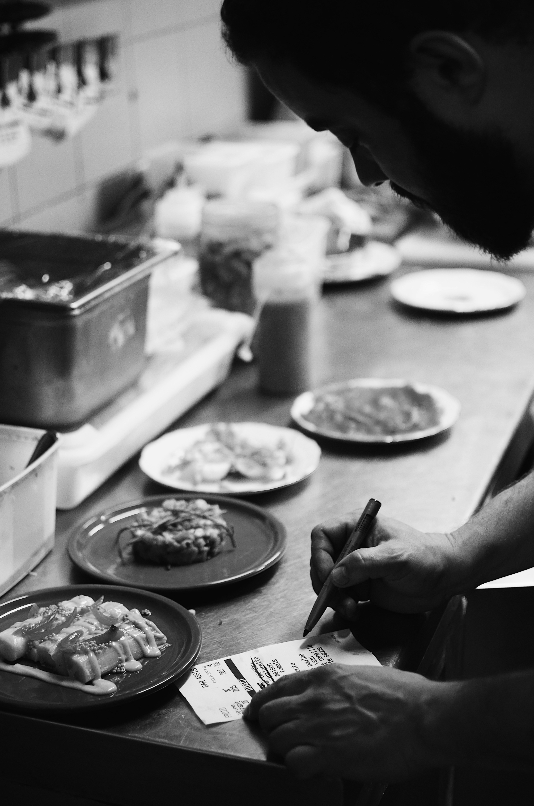

About Étoile 67
Étoile 67 is a French dining restaurant located in the heart of Gatineau, Quebec. Our name means "Star 67" — representing the perfect balance between classic tradition and modern French cuisine. Since opening our doors in 2012, we have been passionate about bringing the authentic taste of France to our community.
Our head chef and dedicated kitchen team carefully prepare each dish using fresh, local ingredients. We believe that dining should be an experience, where every plate tells a story — from our slow-cooked Boeuf Bourguignon to our signature Crème brûlée.
Whether you are joining us for a romantic evening, a family gathering, or a quiet dinner, Étoile 67 offers an atmosphere of warmth, elegance, and exceptional service. We invite you to enjoy the flavors of France, right here in Gatineau.